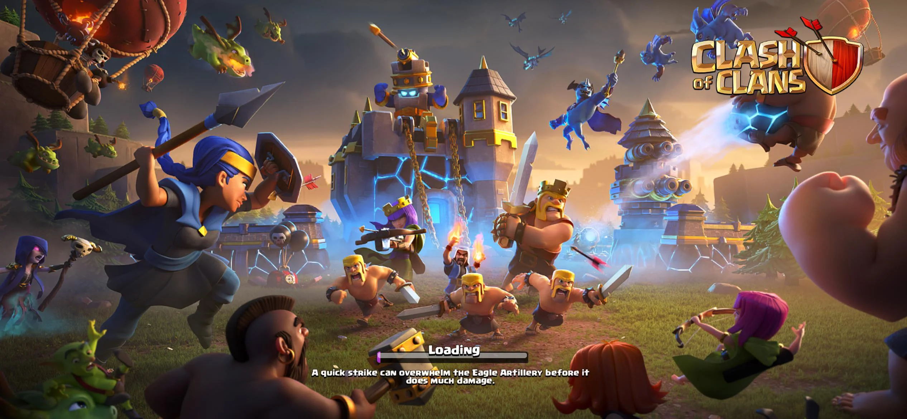
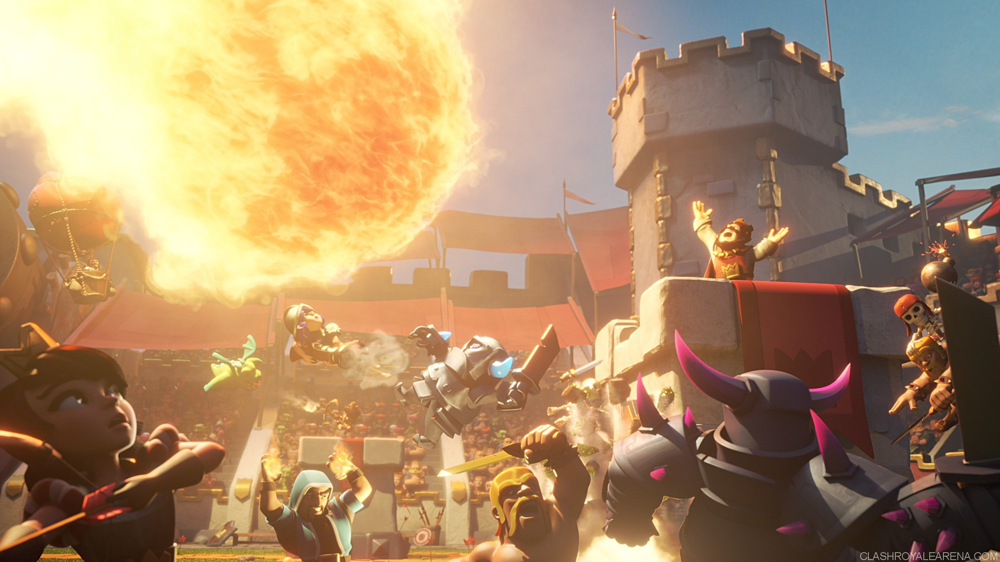
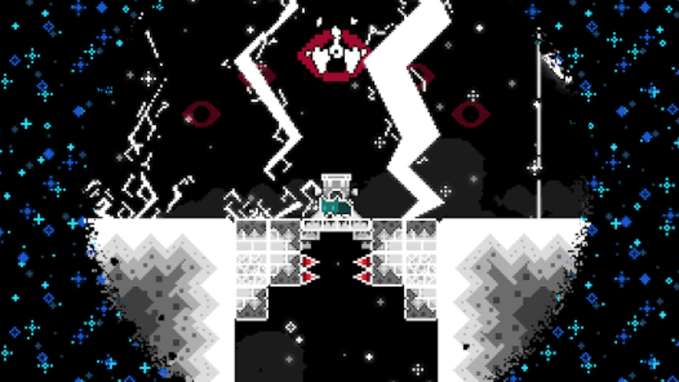
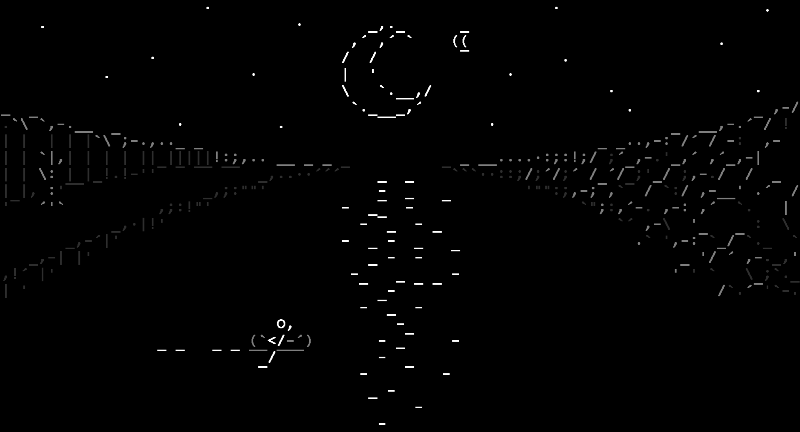
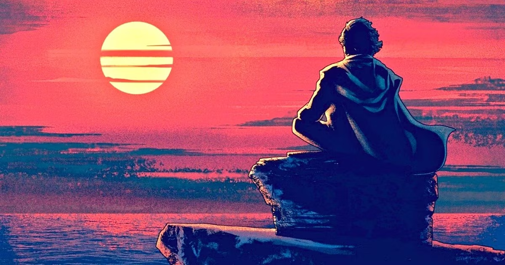
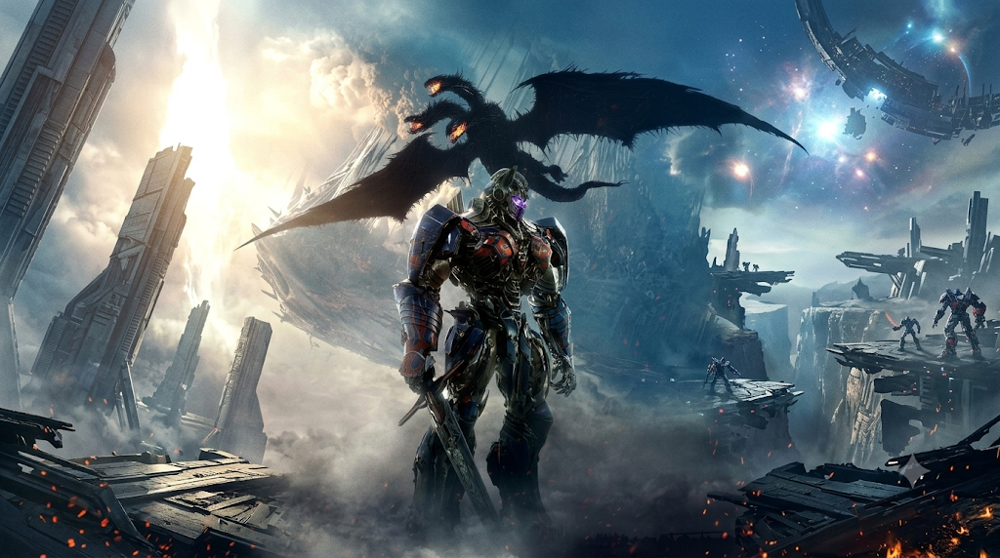
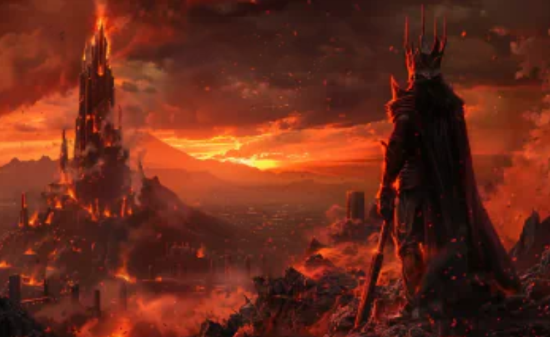
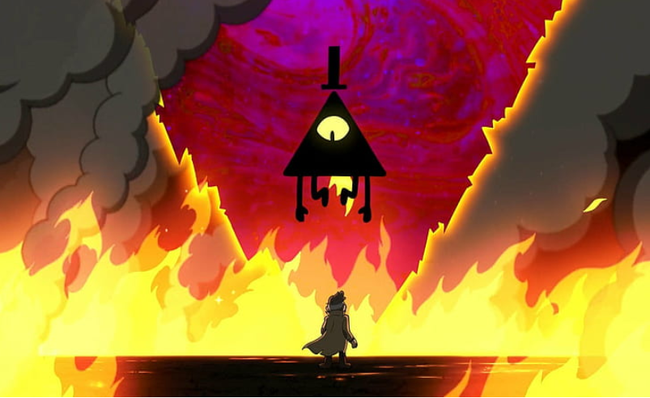

Pragramming is something I enjoy and put time in, but I do like other stuff besides it. This page is dedicated to my interests except coding which includes favourite movie, series and games.This page is a collection of some of the games, franchises, and other interests that I enjoy in my free time.
I have other interests besides coding like playing games and watching movies. I like playings stratergy games like clash of clans ,clash royale and platformer games too. I also like movies and franchises like star wars, transformers, lord ofthe rings etc.
i have played many games and have liked many of them.
some of them are:-

clash of clans is a stratergy game where you build ,upgrade and attack bases. Clash of clans is one of my favourite games because of all the stuff I had done. It helped me in gaining patience because it is a game which requires alot of of patience.
My clash of clans ID name is Soul Snapper. You can find this name in the end of all my pages because I use it as a substitute name.
I have a townhall 11 base and townhall 10 builderbase which is rushed. I have 6 builders in my main base and a few thousand gems which i have saved for hero equipment. My clan name is BOSSES though i might be kicked from my clan because of not playing the game for a long time. If you join the clan,please mention me(soul snapper) and this website.
In my clan, I made many friends from different countries like england, philippines etc. Me and my clanmates used to take our clan seriously. We tried our best to not miss even a single attack in clanwars, capital wars and especially CWL. Even in mismatches , we tried our best and attacked with skill. I even became Co-lead after I 2-starred a townhall 14 with 75% while being in townhall 11.
Overall, Clash of clans is a game I love very much and made lots of memories in it with amazing people regardless of the big age differences.

Clash Royal is a strategy game where you have to build a deck with different cards like troops, spells and buildings and use them to defend your towers while attacking your opponents towers. It was the first game were i came up and used the name "soul snapper"
In clash royale, I dont remember the exact arena I was in, but i remember that I had passed midladder. The deck that I used was my own and not copied from anywhere. It included the following cards:-
I wasn't really in a clan and didn't participate in clan wars and stuff.
Clash royale is a fun stategic game where i had alot of fun.

Nameless cat is a platformer game and Byfar one of my most favourite game with a amazing story, music and great platforming to make it difficult. I played this games like more than 5 times and each time I never got bored.
The story is about a cat which had appeared in entirely different place and was guided by a black orb. The game had a unique feature called "interact" which was used to get inside tombstones and similar objects and like stay in it. In the story ,the cat was actually dead and was trying to find her way home. The twist of the story at the final map was amazing.
Nameless cat is a game which I liked and would consider it my favourite

Stone Story is a action RPG game with asci style art which makes it unique. In the game, You are a unnamed hero in a strange ruined world where civilizations have been devastated by ancient evil and god-like beings. You are woken up by a being called Dysangelos who tells you about the plauged and corrupted world. You need to collect magical stones called soul stones which hold immense power.
At the start the game feels a bit boring but it gets more fun and harder as you play. There is this floating city called Acropolis which was once part of much brighter world.
One of my favourite part of the game was the mindstone which allows you to write code and automate your character's behaviour using a type of coding language called stone script and as you know, i like coding.
the game was unique and its asci style art made me love it even more.
I have watched many movies and liked many franchises, series and movies from it.
Some of them are:-

Star Wars is probably my favourite franchise. Star wars is a science-fiction/fantasy universe which describes the conflict between light and the dark. There is this power called "the force" which is a supernatural energy generated by all living beings. the force has 2 sides-light and dark, light side users are called jedi while dark side users are called sith.
Star wars has a great story with the iconic villain darth vader and has one the the greatest reveals of movie history which was "I am your father" by darth vader to luke.
Star wars is a big universe with different species and planets. It also has alot of side series as well which makes it diverse. One of my favourite side series was "The mandolorian".
My favourite movie from this franchise is Star Wars revenge of the sith

Transformers is also a really good franchise. in it, there are big robots called transformers which can transform into vehicles. They live on the planet cybertron. They are divided into 2 main factions-Autobots and Decepticons. The decepticons are led by megatron and the autobots are led by Optimus Prime who is my favourite character.
transformers franchise does have different versions or universes with some differences in story but the basic concept is the same. Optimus Prime is a wise, powerful and iconic leader. His famous line is "Freedom is the right of all sentient beings"
My favourite universe is the transformers prime series which has a really good story and there are no other transformer shows which could match is greatness. My favourite movie from this franchise is transformers dark of the moon.

The Lord of the Rings is a fantasy story set in the world of Middle-earth. It follows Frodo and his companions as they attempt to destroy the One Ring before it can return to the Dark Lord Sauron.
My favourite character from it is Gandalf. Lord of the Rings is also the movie franchise which has won the most amount of oscars with 17 oscars.
My favourite movie from it is Lord of the Rings Return of the king which has won 11 oscars from 11 nomination.

in my given list ,all of them are a franchise with multiple movies except this one which is gravity falls. gravity Falls was my favourite childhood cartoon. The story is about two cousins, dipper and mabel, who visit their uncle's hometown and stay there for the summer break, but the town gravity falls had many weird anomolies going on.
Dipper finds a journal with a six-fingered golden hand print. It had a record of all the wierd anomolies going on in the town. There is no singular main villain but the villain at the end of the series is a yellow triangular looking being called "Bill cipher" who wants to cause chaos on our dimension.
the series has many hidden easter eggs and small hints towards the main villain at the end. There even was a treasure hunt on the internet after the series had ended.
The series is very good and one of my favourite series of all time